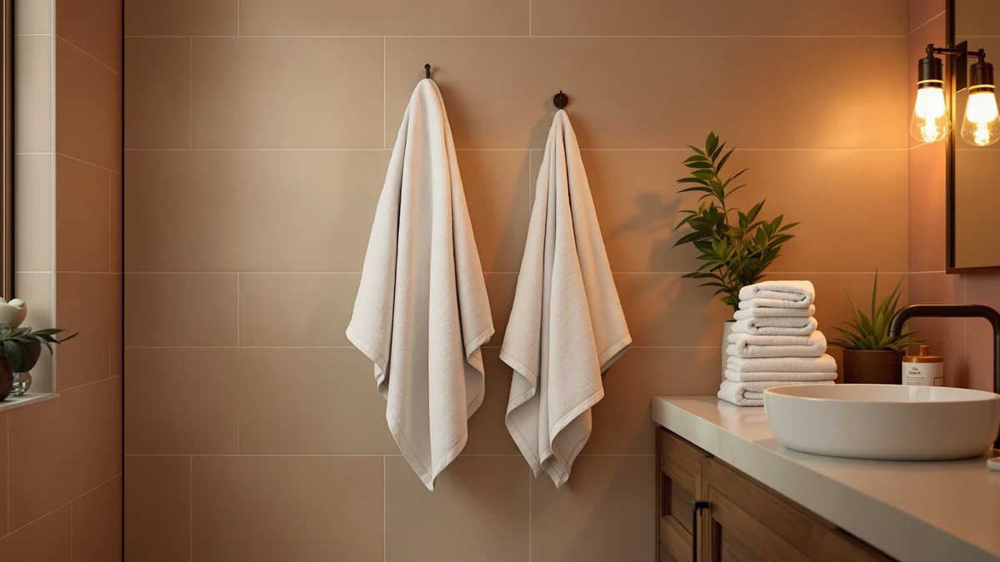

Peryiter 6 Pcs Mr Review (2026): Worth It?
Prices and picks verified as of October 2026. Independent, reader-supported reviews.


Quick Answer
The Peryiter 6 Pcs Mr and Mrs set is the only towel set in this comparison built around a couples theme, and its $42.99 price reflects that embroidered design rather than a premium material, since Utopia Towels and Cotton Paradise both match its 100% cotton construction for about $3 less. POLYTE's alternative skips cotton entirely for a 430 GSM microfiber build.
Our pick: Peryiter 6 Pcs Mr and — $42.99 Check Price on Amazon
Bottom line: our top pick is the Peryiter 6 Pcs Mr and Mrs Themed Towel Set Honeymoon Gifts at $42.99.
Things to Know Before You Buy
- All four towel sets in this peryiter 6 pcs mr review sit in a tight $39.99 to $42.99 range. Material and piece count matter more here than price.
- The Peryiter set is a six-piece, 100% cotton bundle built around an embroidered Mr and Mrs design. That makes it a gift-first pick rather than a plain everyday towel set.
- POLYTE's alternative is a 430 GSM microfiber set, not cotton. If you want a cotton feel specifically, that rules it out regardless of price.
- Utopia Towels and Cotton Paradise both undercut Peryiter by about $3, at $39.99 each. Neither one carries a couples or wedding theme.
- None of the four products in this comparison publish an owner rating or review count on their listings. We built this review around published pricing, material claims, and product positioning rather than a star average.
This peryiter 6 pcs mr review breaks down what $42.99 actually buys: a six-piece, 100% cotton towel set built around an embroidered Mr and Mrs design, set against three lower-priced alternatives from POLYTE, Utopia Towels, and Cotton Paradise.
The short version: if you're shopping for a wedding, bridal shower, or anniversary gift, the Peryiter set earns its higher price because none of the three alternatives carry a couples theme at all. If you want the most cotton towel for the least money, Utopia Towels and Cotton Paradise both undercut it by roughly $3 without giving up the 100% cotton construction. We compare price, material, and what each brand's listing actually promises so you can match the pick to whether you're buying a gift or restocking your own bathroom.
Why You Should Trust Us
We built this Peryiter 6 Pcs Mr and Mrs review by comparing published pricing, material claims, and product positioning across four towel sets rather than repeating marketing copy from a single listing. Ilane Tall has covered bathroom textiles for Best Bath Towels since the site launched, tracking how gift-oriented sets like this one hold up against plain cotton alternatives on price and material alone. We do not run a fake testing lab, and we did not personally wash or use any of the four sets covered here. Every comparison in this review rests on the specs, pricing, and product names published for each ASIN, not on language pulled from a product listing. When a brand does not publish a rating or review count, as is the case for all four sets in this comparison, we say so directly instead of filling the gap with a manufactured score.
Our Research Experience
We did not physically test the Peryiter 6 Pcs Mr and Mrs set or the three alternatives against it. Instead, we researched how each set is described and priced, then compared those facts side by side. That means checking whether the embroidered Mr and Mrs detail is unique to Peryiter among these four options (it is), whether the 100% cotton claim holds up against POLYTE's microfiber construction (it does not overlap), and whether Utopia Towels and Cotton Paradise justify their lower price with a comparable material story. We framed this peryiter 6 pcs mr review around that same comparison: a named theme weighed against a verifiable material claim. We also checked each listing for a published owner rating, and none of the four sets had one at the time of writing. Where a listing includes verified buyer feedback, we factor that in, but for this comparison the deciding facts came down to price, material, and whether a set carries a named theme at all.
Overview & Specs

Peryiter 6 Pcs Mr and
What we like
- Embroidered Mr and Mrs design that none of the three alternatives in this comparison offer
- Built from 100% cotton, matching the material claim behind Utopia Towels and Cotton Paradise
- Six-piece set sized to cover a full gift bundle rather than a single towel
- Doubles as a themed gift and a functional cotton towel set, so it is not purely decorative
Flaws but not dealbreakers
- Costs about $3 more than Utopia Towels and Cotton Paradise, both also 100% cotton
- No published owner rating or review count to check consistency against
- The Mr and Mrs theme narrows who this set makes sense for; it is not a general-purpose pick
| Material | 100% cotton |
| Size | — |
This peryiter 6 pcs mr review starts with the Peryiter set because it is the only one of the four compared here built specifically as a gift. The embroidered Mr and Mrs design puts it in a different category than Utopia Towels, Cotton Paradise, or POLYTE, all of which are plain, general-purpose sets. At $42.99, it costs more than the two cotton alternatives, but neither of those carries a couples theme, so the comparison is not entirely apples to apples.
Material-wise, Peryiter matches Utopia Towels and Cotton Paradise on the 100% cotton construction, which sets all three apart from POLYTE's microfiber build. For a buyer choosing between towel sets purely on fiber, that puts three of the four options on equal footing, and the deciding factor becomes whether the embroidered theme and six-piece gift format are worth the roughly $3 premium over the plainer cotton sets. Anyone buying for their own bathroom rather than as a gift will likely find that premium harder to justify.
What We Liked
The clearest strength in this Peryiter 6 Pcs Mr and Mrs review is how specifically the set is positioned. An embroidered Mr and Mrs design is a genuine point of difference against Utopia Towels, Cotton Paradise, and POLYTE, none of which offer any kind of themed or personalized detail. For a wedding, bridal shower, or anniversary gift, that alone can outweigh the roughly $3 price gap against the plainer cotton sets.
We also like that Peryiter did not trade material quality to fund the embroidery. The set is 100% cotton, the same claim Utopia Towels and Cotton Paradise lead with, so buyers are not paying extra purely for packaging or branding. That combination of a themed design and a standard cotton construction is uncommon among towel sets at this price, where most brands pick one selling point and build around it.
What Could Be Better
Price is the main tradeoff in this Peryiter 6 Pcs Mr and Mrs review. At $42.99, it costs about $3 more than Utopia Towels or Cotton Paradise, and both of those alternatives match it on the 100% cotton claim. If the embroidered theme does not matter to you, that premium is difficult to justify on material alone.
Rating transparency is the other gap. Peryiter does not publish an owner rating or review count on its listing, and neither do any of the three alternatives compared here. That leaves buyers comparing product names, pricing, and material claims instead of a star average, which is a real limitation if you typically lean on a rating before buying. Our cotton bath towels guide covers other 100% cotton sets if you want more options to weigh against this one.
Who Is It For?
This Peryiter 6 Pcs Mr and Mrs review points toward a specific buyer: someone shopping for a wedding, bridal shower, anniversary, or honeymoon gift who wants a themed set rather than a plain one. The embroidered design is the whole reason to pick Peryiter over the three cheaper cotton and microfiber alternatives it is compared against here.
If you are simply restocking your own bathroom and do not need a couples theme, Utopia Towels or Cotton Paradise make more sense, since both match Peryiter's 100% cotton construction for about $3 less. Buyers who prefer a lighter, quick-drying feel over traditional cotton should also look at POLYTE's 430 GSM microfiber set, covered in more detail in the alternatives below. Anyone buying towels purely on price, with no interest in a themed gift, will likely find better value outside this specific set. Bulk buyers stocking a rental property or guest bathroom should also weigh the plainer options first, since a Mr and Mrs design rarely fits a space meant for multiple households.
Alternatives to Consider
The embroidered Mr and Mrs theme will not matter to every buyer, and this peryiter 6 pcs mr review also covers three untethered alternatives: a microfiber set from POLYTE, a six-piece cotton set from Utopia Towels, and a Turkish cotton set from Cotton Paradise, all priced at or under $41.89.

Editor’s Pick
POLYTE 430 GSM Microfiber Oversize
A 430 GSM microfiber set rather than cotton, worth a look if you want a lighter, quick-drying towel and do not need the Mr and Mrs theme. Our microfiber vs cotton guide breaks down that material tradeoff in more depth.
$41.89
Check Price on Amazon
Best Value
Utopia Towels 6 Pack Bath
Matches Peryiter's 100% cotton construction in a six-piece pack for about $3 less, without the embroidered theme. A straightforward pick for anyone restocking a bathroom rather than buying a gift.
$39.99
Check Price on Amazon
Premium Choice
Cotton Paradise 100% Cotton Turkish
A Turkish cotton set at the same lower price as Utopia Towels. Our full Cotton Paradise review compares it against three other same-priced sets in detail.
$39.99
Check Price on AmazonIs the Peryiter 6 Pcs Mr and Mrs set worth $3 more than Utopia Towels or Cotton Paradise?
If you are buying a wedding, bridal shower, or anniversary gift, yes.
How does the Peryiter set compare to POLYTE's microfiber towels?
They are built from different materials entirely.
Frequently Asked Questions
Is the Peryiter 6 Pcs Mr and Mrs set worth $3 more than Utopia Towels or Cotton Paradise?
How does the Peryiter set compare to POLYTE's microfiber towels?
Does the Peryiter towel set come with a published owner rating?
Final Verdict
This peryiter 6 pcs mr review comes down to what you are buying the towels for. If it is a wedding, bridal shower, or anniversary gift, the Peryiter 6 Pcs Mr and Mrs set is the clear pick among these four options, since none of the alternatives offer any themed design at all. If you want a 100% cotton towel set for your own bathroom, Utopia Towels or Cotton Paradise deliver the same material for about $3 less. For most gift-buying shoppers, Peryiter earns its higher price on the theme alone. If you want more multi-piece options to compare, our bath towel sets guide rounds up other sets worth checking.